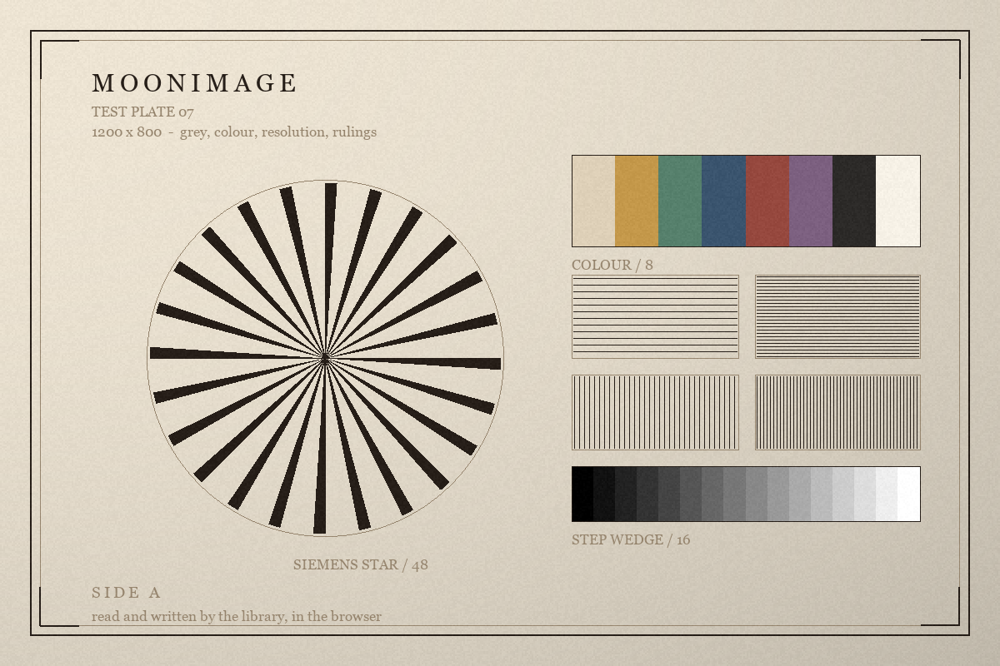

The workbench
Thirteen formats, one picture.
The plate is read once, then written in every format this library can write and read straight back. Below it, the arithmetic: crop, turn, scale, blur, sharpen, brighten, turn the hue. Every number and every pixel on this page came out of the library compiled to JavaScript.

Written back, format by format
encoded, decoded, and compared with the pixels that went in
Round trip
| Format | Bytes | Reads back as | Pixels |
|---|---|---|---|
| reading the plate… | |||
Exact means every sample came back identical. Within a step means the format stores the colour at a coarser resolution than eight bits — Radiance shares one exponent between three mantissas, OpenEXR rounds to a half — and lossy means it threw colours away on purpose.
The arithmetic
each button runs one operation on the plate, in this tab
Geometry
Filters
Colour
An angle that is not a right one
A quarter turn is a permutation and costs nothing; any other angle resamples, because the source of an output pixel almost never lands on a sample. The canvas grows to hold what comes out.